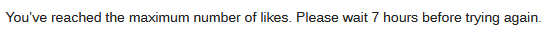

As I said before Derps is taking this game more seriously than last game. He could be telling the truth about being a Mercenary.
1 Like
do archdeacon things instead 
Do your important work or I’ll poison you :^)
If I am more talkative today it’s because I am in a better mood and actually willing to play d1 this time.
Ans do we have any reason to think even if he’s a mercenary that his targets are town right now?
We have no idea at this point.
1 Like
at this point I’m definitely confbiasing but CRich’s tone is 
1 Like

this song is starting to grow on me
The issue is, we don’t really have much to discuss right now.
Like I mentioned above, Arete’s icebreakers don’t really work anymore because our answers are going to be largely the same.
If you have any points that we should discuss – feel free to propose them.
Maybe it’s just me trying to not use meta again but the way that question was worded is meh.
Could be my tired brain overthinking things.
Lets hear it right now Arete. Seeing that he already has a negative impression of me.
1 Like

i see what arete’s saying
It feels like you’re trying to imitate the way you post as town and failing
This sounds bad
Is there something wrong with my eyes or why are there multiple people immediately thinking CRich’s tone is off
We don’t have any reasons to think his targets are town but statistically it’s far more likely that they are.
And I’m against outing them should his claim be real because like I explained above, it works against us.
Why does this feel completely rigid.
Like it’s manufactured.
1 Like
just popped back in
you know what, i really need to know if this works in FM because this works too often in ToL and if i live all game doing this then i get to laugh at priestess because survivor neuts bad
d1 alch
im submitting neutrality
He said the exact thing about me last game
Why are Ans’s thoughts literally just my thoughts but with words instead of